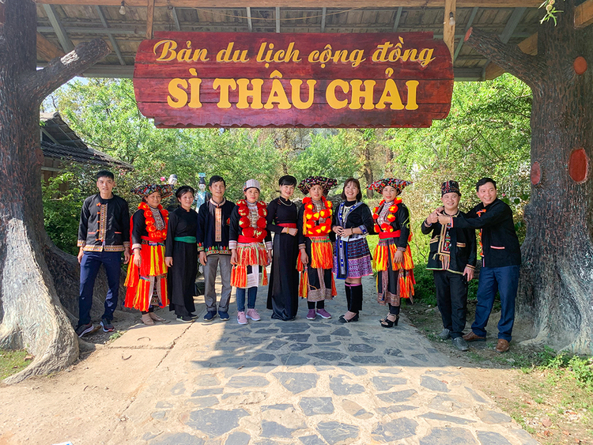

DỊP GẶP GỠ
Chợ phiên San Thàng
Không chỉ là nơi trao đổi hàng hóa, phiên chợ còn là dịp gặp gỡ, trò chuyện và khoe sắc trang phục của đồng bào vùng cao.
SẮC MÀU BẢN LÀNG
Gặp gỡ con người, lắng nghe câu chuyện và cảm nhận bản sắc của các dân tộc Lai Châu.
Cảm nhận văn hóaDI SẢN TRONG ĐỜI SỐNG
Phong tục, tiếng hát và sắc màu truyền thống được gìn giữ qua bao thế hệ.

SÌ THÂU CHẢI · TAM ĐƯỜNGKhông chỉ là nơi trao đổi hàng hóa, phiên chợ còn là dịp gặp gỡ, trò chuyện và khoe sắc trang phục của đồng bào vùng cao.
Lễ hội gắn với tín ngưỡng dân gian của người Thái, gửi gắm ước mong về cuộc sống bình yên, mùa màng tốt tươi.
Trong tiếng khèn, điệu múa và trò chơi dân gian, cộng đồng cùng sum vầy và gìn giữ những nét đẹp truyền thống.
Từng đường chỉ, hoa văn và sắc màu kể câu chuyện về đôi bàn tay khéo léo cùng bản sắc riêng của mỗi dân tộc.